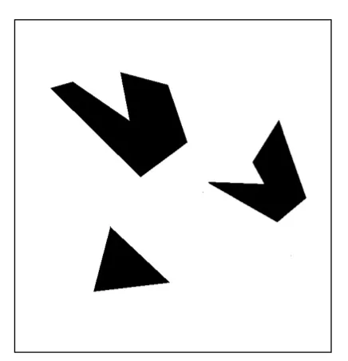
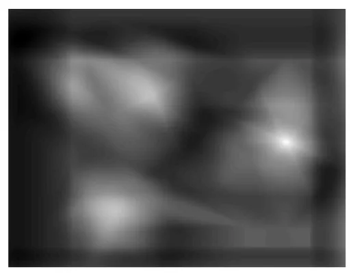
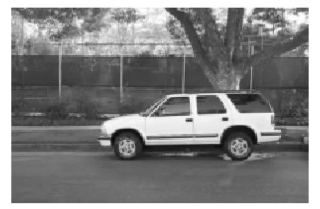
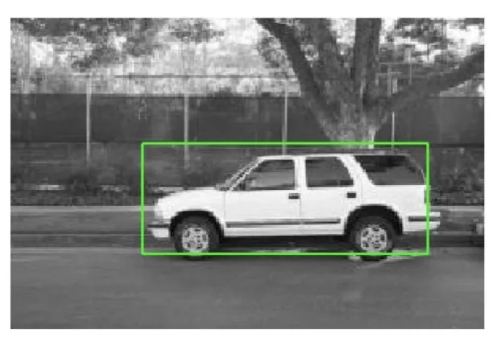

计算机视觉 · 第 2 章 图像处理基础
2.11 模板匹配
前面几节把滤波和互相关当成「算法」来讲：给一幅图、给一个核，算出一幅新的图。这一节把它们用到一个具体任务上——在一幅大图里找一小块已知的图像。线索分三步：先弄清模板和模板匹配要解决的问题，再看匹配是怎么逐位置算出来、结果为什么要画成互相关图，最后看这个方法的软肋——它给出的「最佳位置」未必真的存在。
1. 模板与模板匹配
模板（template）是一幅已知的小图像，也就是我们要找的那个「样子」；模板匹配（template matching）要做的，就是在另一幅大图像中搜寻它。小图是已知的，大图是待检的，任务是在大图上回答「它在哪里」。
课件给出的实现思路只有一句，却是整节的关键：滤波器的值就是模板的像素值。也就是说，模板匹配并不需要一套新的运算——把模板本身当成一个滤波器核，前面讲过的互相关正好就是它的计算方式。模板有几行几列，核就有几行几列；核里填的不是人工设计出来的系数，而是模板的像素灰度。

2. 从左到右、从上到下遍历
有了模板当核，匹配的过程就变得很具体：在要检测的图像上，用这个滤波器从左到右、从上到下遍历图像，每停在一个位置，就计算滤波器（模板）与它覆盖的那块重叠子图像之间的像素匹配度。匹配程度高，就说明这个位置的内容与模板相似度高。
课件第 63 张把这一步画成了示意图。把它和前面讲的滤波对照会更清楚：滤波时核滑过整幅图，每个停留位置输出一个数；模板匹配的过程完全一样，只是输出的这个数被赋予了新的含义——它不是新图像里的一个像素，而是「这里像不像模板」的一个分数。
3. 互相关图：把匹配度画成图
既然每停一次就得到一个分数，把这些分数按位置排成一张与原图对应的图，就得到了互相关图：数值越大显示得越亮，表示对应位置上模板与图像的匹配度越高。于是有了本节最好用的一句结论——互相关图中亮度最高的地方，就是匹配度最大的位置，也就是检测到的模板位置。

这一步的价值在于把「找目标」换成了「找最大值」：判定匹配不再需要人眼在图上逐块比对，只要在互相关图上取一个峰值。不过这也意味着，匹配的全部依据都集中在这个亮度的比较上——方法的能力上限就写在这里。
4. 模板不是原图子图时会怎样
课件紧接着提出一个更要紧的问题：如果模板不属于原图像的子图，也就是图中根本没有这个目标，结果会怎么样？答案是，匹配很可能照样成功。因为匹配度衡量的是像素层面的相似，只要图中某处的比例、方向和整体外观与模板相近，该处的互相关值就足够高，算法便会把它当成检测到的模板交出来。

这就是模板匹配最大的风险：它只认「长得像」，不认「是不是」。同一个物体换一个尺度、转过一个角度，或者两个完全不同的物体碰巧有相近的纹理与布局，都会让它给出一个看起来十分确定的错误答案。

所以用它的时候不能只看峰值落在哪里，还要看这个峰值有多突出——是否显著高于其他位置，必要时再用一个阈值，把「没有找到」这种结果也允许说出来。这个短板也正是后面要单独研究特征与匹配的原因：第 4 章讲的局部特征与描述子，目标就是让匹配在尺度、旋转发生变化时依然可靠。
本节小结
- 模板是一幅已知的小图像，模板匹配就是在一幅大图像中搜寻这个目标。
- 实现思路是「滤波器的值就是模板的像素值」：模板直接当核，用互相关逐位置算出匹配度。
- 匹配的过程是让滤波器从左到右、从上到下遍历图像，每次计算模板与重叠子图像的匹配度。
- 把各位置的匹配度排成互相关图后，亮度最高处就是匹配度最大、即检测到模板的位置。
- 它的风险在于只比较像素相似度：模板即使不是原图的子图，只要比例、方向和整体外观相近也可能匹配成功，因此还要靠峰值是否突出、阈值来把关。